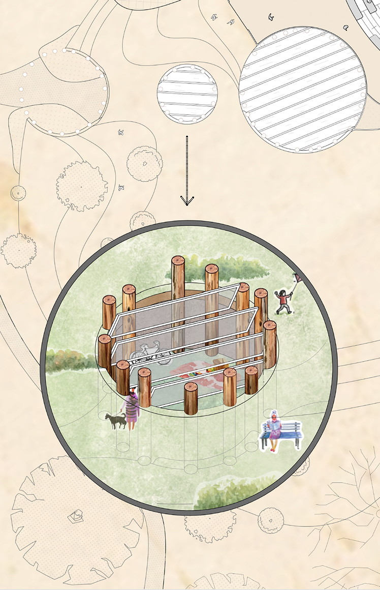
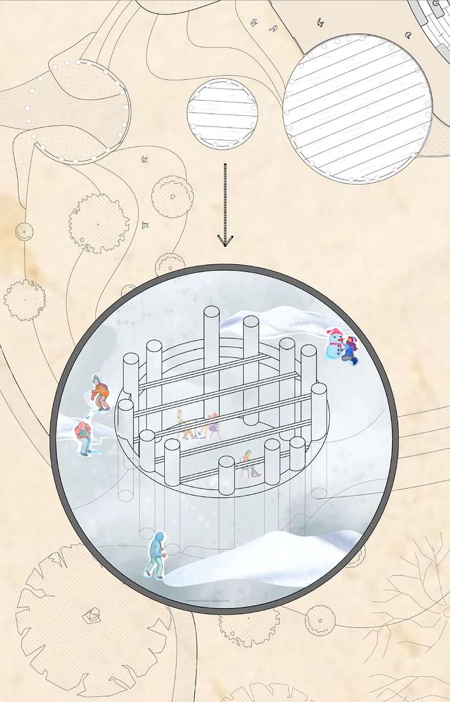
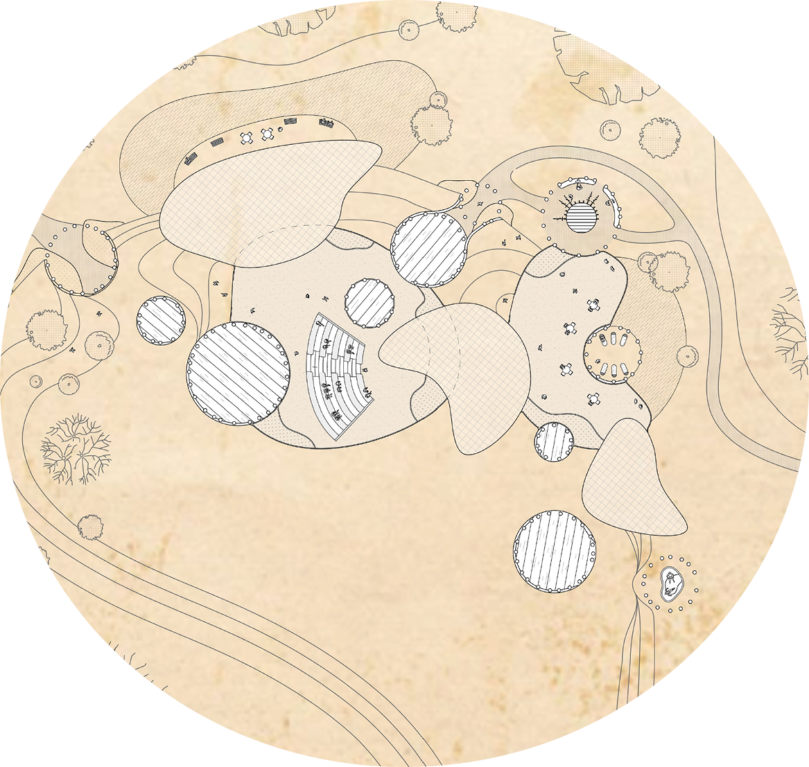
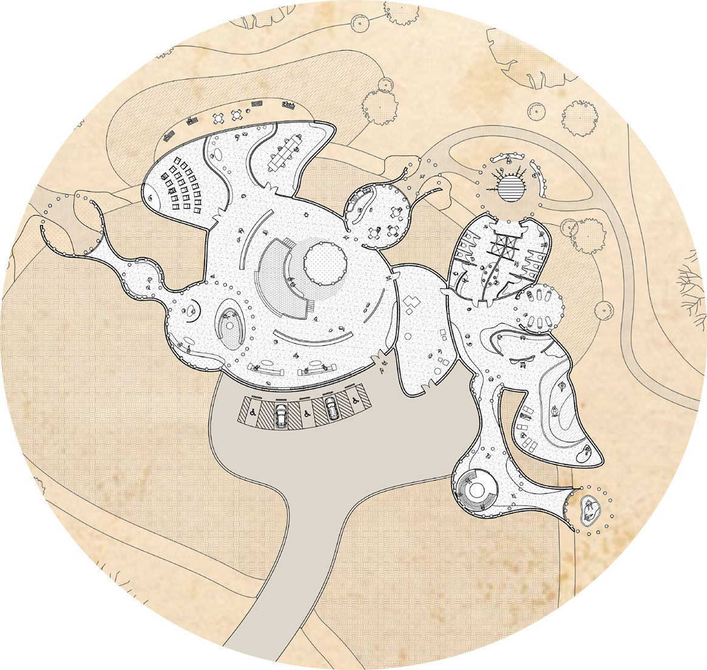

ONE BUILDING, FOUR SEASONS
Landform is designed to stay in use all year. Its circular openings and sliding glass doors let each space open to the weather in warm months and close against it in cold ones, so the same rooms serve different needs as the seasons change.
OPEN TO
WEATHER
The roof over the circle retracts and the glass doors slide open, so the space reads as an outdoor room.
USED OUTDOORS
People gather, rest and move through the circle and under the logs.
DAYLIGHT +
AIR
Sun and breeze reach the interior through the opening.

SPRING / SUMMER

CLOSED AGAINST THE WEATHER
The sunroof and doors close, turning the same circle into a sheltered interior.
STILL LIT BY DAYLIGHT
The glazing keeps natural light inside even in snow.
SAME
CIRCULATION
The paths through the building stay the same, so people use it in every season.

FALL / WINTER

WHERE THE BUILDING CHANGES
The plans below show where these seasonal changes happen. The operable skylights, shown in blue, are the circular openings that open and close. The areas in green are exposed to exterior conditions, so they’re the parts that are completely outdoors, but apart of the building.

